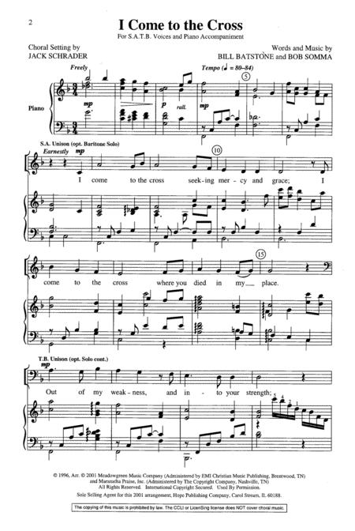

|
|
【我靠近十架】 |
|
I come to the cross seeking mercy and grace, |
我靠近十架，尋找憐憫、恩典， |
|
 |
|
|
|
|

https://youtu.be/7zjp3ks8fnY -
https://youtu.be/h8nsAKqf0rA
| Text: | I Come to the Cross |
| Author: | Bob Somma, 20th c. |
| Tune: | [I come to the cross] |
| Composer: | Bill Batstone, 20th c. |
| Text Information | |
|---|---|
| First Line: | I come to the cross seeking mercy and grace |
| Title: | I Come to the Cross |
| Author: | Bob Somma, 20th c. |
| Author: | Bill Batstone, 20th c. |
| Language: | English |
| Publication Date: | 2003 |
| Scripture: | ; ; ; |
| Copyright: | Words © 1996 Meadowgreen Music (Admin. EMI Christian Music Publishing) and Maranatha Praise, Inc. (Admin. The Copyright Company) |
| Tune Information | |
|---|---|
| Name: | [I come to the cross] |
| Composer: | Bill Batstone, 20th c. |
| Composer: | Bob Somma, 20th c. |
| Key: | F Major |
| Copyright: | Music © 1996 Meadowgreen Music (Admin. EMI Christian Music Publishing) and Maranatha Praise, Inc. (Admin. The Copyright Company) |
| Short Name: | Bill Batstone |
| Full Name: | Batstone, Bill |
| Birth Year: | 1951 |
Bill Batstone was born in 1951 into a Christian home in Berwyn, Illinois. He started in Christian music in the 1970's. He has gone on to perform all over the world with various groups. He has also written many songs. He is currently a worship leader at Harvest Christian Fellowship, a church with campuses in California and Hawaii. He has participated with Harvest Crusades and Franklin Graham Crusades.
Dianne Shapiro, from Harvest (harvest.org) and last.fm (https://www.last.fm/music/Billy+Batstone/+wiki) accessed 7-15-2018
Bob Somma
Arranger, Guitars, Musical Director
Bob Somma is a professional guitarist, producer and seasoned studio veteran in the Los Angeles area. His credits include commercial television, movie soundtracks and many artists’ projects. Bob is the band’s Musical Director and has produced four of their CD’s. He has been playing guitar and bass in worship bands for the last 30 years, is also an ordained minister. He also consults with several churches helping them develop their musicians and worship teams.
He is married to Paula and lives in Southern California.
https://tommycoomesband.com/bob-somma/
I was raised in a Christian home. My dad and mom raised us five kids in the faith. Serving the church was the main part of their lives. My interest in music began early in life. My dad was a traveling salesman. When he was on the road, my mom, who was a pretty good singer and piano player, used to play hymns at night after we went to bed. We would call out our favorite songs from our beds, promising to go to sleep if she played “just one more.”
Our family moved to Hawaii in the early 60s because of my dad’s job. I took up the ukulele and then later graduated to guitar. I loved music and the songs on the radio in the 60s really captured my attention. My parents loved music too, but not the kind of music that I liked. I would borrow the family car and sneak off to as many rock concerts as I could.
Although I accepted Christ as a young child, I didn’t become a follower of His until I was a senior in high school. God brought two people into my life who were both big influences on me. One was my youth pastor; a guitar player and a singer, Bible teacher, and evangelist from West Virginia. The other was my high school friend; a pastor’s kid and a talented musician. They both were important in my decision to commit my life to Christ. From that point, I felt a desire to serve God with the music that I loved. My high school friend and I started a band in 1970 during the Jesus Movement, writing our own songs, playing at schools, churches, coffee houses, and jails all around Southern California.
Calvary Chapel in Costa Mesa was going strong and it was a magnet for Christian musicians. I joined some of the bands there and played bass on some of the recordings they were putting out. I met Pastor Greg back then and played for some of the Bible studies that he was teaching.
Since the early 70s, I’ve toured all over the world, been a part of many recordings, and have written a number of songs. In 1985, God brought me the wonderful gift of my wife, Kathy. We met when we were both working for a music publisher, she as a secretary and I as a music writer. We have two great children, pretty grown up now, Mark and Laura.
I’m part of a band that was formed in 1989 to lead worship at Harvest called the “Tommy Coomes Band.” We played at the early Harvest Crusades. We serve all over the world with Franklin Graham, Samaritan’s Purse, and the Billy Graham Evangelistic Association.
I’ve played at most of the Harvest Crusades since 1990. In 2000, I was invited to join the worship staff at Harvest. I love my job here. It’s an amazing privilege to work with this great team. God is doing amazing things at Harvest and I am blessed to be a part of it.
Born in: 1951
Birthplace: The hospital (Berwyn, Illinois)
Worship Leader since: 1982
Instrument of choice: Guitars and Basses
Previous work: House Painter/Delivery/Custodial/Electronic Assembly
Favorite Verse: Romans 8:1–5
Favorite worship song: How Firm a Foundation
Married to: Kathy
Married since: 1985
Children: Mark, Laura